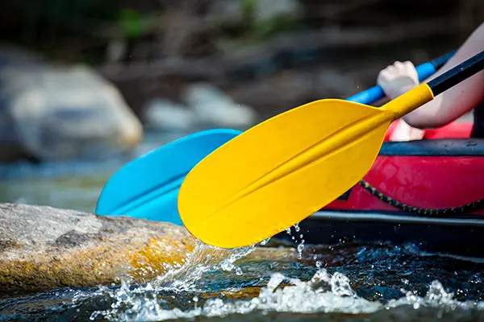

Los Dientes del Diablo
Feel the excitement of being on the river with your team as you paddle through
an unforgettable rafting experience. Los Dientes del Diablo brings people
together for a day of teamwork, laughter, and adventure on the water. This trip
is perfect for those who enjoy an active challenge and want to share an exciting
experience with friends or fellow adventurers.
Duration: 6 hours
Difficulty: Advanced

Half Day Adventure
Begin your adventure with your group as you prepare for an exciting journey on
the river. Half Day Adventure offers a fun introduction to rafting, giving you
time to get ready, meet your guides, and enjoy the excitement of being part of a
team. It is a great choice for visitors looking for an enjoyable rafting
experience in a shorter time.
Duration: 4 hours
Difficulty: Intermediate

Rafting Adventure
Paddle your way through the river and enjoy the simple thrill of being
surrounded
by moving water and adventure. Rafting Adventure gives you the opportunity to
work together with your group, follow the rhythm of the river, and enjoy every
moment on the water. It is an enjoyable option for beginners and anyone looking
for a fun outdoor experience.
Duration: 2 hours
Difficulty: Beginner